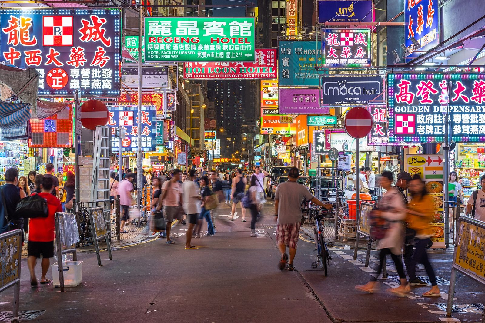

References / Photograph / 452
Neon signs on Shantung Street, Mong Kok
A crowded pedestrian street in Mong Kok, Hong Kong, under a canopy of illuminated Chinese and English signs for pharmacies, hotels, and shops.
- Source
- Wikimedia Commons: Mong Kok Neon Signs Night (48127904386).jpg
- Creator
- Benh Lieu Song
- Made
- 13 June 2019
- Style
- Cyberpunk (agent-proposed, not yet reviewed by a person)
- Moods
- Dense, nocturnal, busy
- Evidence
- Downloaded and inspected the Commons 1920 px rendition of the 6000 × 4000 px original, uploaded from Flickr (photo 48127904386) and reviewed by FlickreviewR 2. The description reads “Night busy life and neon signs on Shantung Street, near the Ladies Market in Mong Kok, Hong Kong.”
- Reviewed
- Rights
- Open license, stored. License: CC-BY-SA-2.0. Rights policy
.jpg){kind=link}
Context
Wikipedia names Hong Kong and Kowloon Walled City as models for the cyberpunk city, and Ridley Scott described the look of Blade Runner as “Hong Kong on a very bad day”. See Blade Runner and Kowloon Walled City.
Mong Kok is a district of Kowloon known for street markets and dense shop signage. The photograph is in the Commons categories “Luminous shop signs in Hong Kong” and “Street photography in Hong Kong”. Commons.jpg).
Observed
- Signs fill the upper half of the frame in several overlapping layers, each projecting over the street.
- The largest are a red-on-blue LED sign with Chinese characters and a red-and-white checkered “Rx” mark at left, a green sign reading “REGENG HOTEL” at top center, and a magenta-edged sign reading “GOLDEN DISPENSARY” at right.
- Many signs are framed by rows of small LED dots. Text is mostly heavy Chinese characters, with smaller English capitals below.
- Two red no-entry road signs and metal barriers stand in the street. The crowd below is blurred by a slow shutter.
- A dark tower block with lit windows closes the far end of the street. The sky is not visible.
Why it belongs
The density is the point: sign over sign with no empty sky, which is the visual model for the style’s many small labelled panels.
Each sign is a framed panel with an outline of lights. That is the street origin of the glowing hairline frame.
Borrow
Overlap many small framed panels in depth, each with its own outline of light, rather than one large hero image.
Pair a large heavy heading with a small line of capitals below it, as on bilingual signs.
Measured
Machine-extracted by tools/image-traits.py on . Full measurement.
- Mean chroma
- 0.17
- Palette
- #573c3a 8%
- #6b5960 8%
- #644c4d 7%
- #433336 6%
- #816971 5%
- #957a8d 4%
- #494353 4%
- #30282e 4%

